Đầu chủ kéo hoặc dán ảnh từ Zalo trên máy tính vào hồ sơ căn và xếp vào ba ngăn; ngăn nội bộ không bao giờ ra ngoài, không lưu trên máy
Vì sao làm
Màn P0 (M5, 2); Tham chiếu §2: đường chính nhận ảnh là máy tính Số đo hai tuần thử gần nhất (Tham chiếu §11): Tỉ lệ căn ở mức đủ cao nhất — ngưỡng số đặt trước khi thử.
Đã hứa
- AC-1 — Given đầu chủ giữ căn A mở hồ sơ A (cột phải của Bảng hàng hay `/units/<mã>`), When kéo thả một hay nhiều tệp
- AC-2 — Given đầu chủ thêm ảnh, When một tệp không phải JPEG/PNG/WebP (xét byte đầu tệp, không xét đuôi tên), quá
- AC-3 — Given ngăn Gửi được của căn A có ảnh, When đầu chủ kéo đổi thứ tự, chọn «Đặt làm ảnh bìa», hay bật/tắt «Ảnh
- AC-4 — Given căn A có ảnh, When đầu chủ chuyển một ảnh Gửi được ↔ Nội bộ, hay «Xoá khỏi căn» rồi xác nhận, Then ảnh
- AC-5 — Given căn A có ảnh ở cả hai ngăn, When người xem là đầu chủ giữ lần rao mới nhất của A hay trưởng nhóm (bất kỳ trưởng nhóm nào của sàn, như luật nguồn
- AC-6 — Given người xem được ngăn nội bộ, When mở ảnh nội bộ, Then phản hồi mang `Cache-Control: private, no-store`,
- AC-7 — Given một căn có ảnh ở hai ngăn, When một cửa ra (trang khách, gửi ảnh + tin, phát hàng — hàng sau) chọn ảnh qua
- AC-8 — Given căn A, When mở thẻ «Tự có từ mã», Then thẻ hiện ảnh danh mục của đúng toà và mã khi danh mục có; danh mục
- AC-9 — Given hai sàn X, Y cùng có căn trùng toà và mã, When người của Y đọc, thêm, sửa ảnh, byte hay sự kiện ảnh của X
- AC-10 — Given cột hồ sơ trên bản chạy thật với dữ liệu mẫu, When đầu chủ đi luồng chính (thả ba ảnh, đổi thứ tự, đặt
Thiết kế
docs/superpowers/specs/2026-11-01-anh-can-ba-ngan-design.md
Quyết định
- 2026-11-01 · Máy · approach · S1 — Đã tra tri thức: Đầu chủ kéo hoặc dán ảnh từ Zalo trên máy tính vào hồ sơ căn và xếp vào ba ngăn; ngăn nội bộ không bao giờ ra ngoài, không lưu trên máyKho đã khai tri_thuc — bước thiết kế tra trang trước khi chọn.
- 2026-11-01 · Máy · approach · S1 — Hỏi-1 — giữ byte ảnh ở đâu: khuyến nghị giữ trong Postgres của dự án Quỹ hàng (bảng unit_photo_files có luật theo dòng) sau giao diện KhoAnh, đổi sang Supabase Storage khi dung lượng lớn.Luật đợt 20 bắt hỏi khi nơi giữ ảnh tốn tiền hay công khai; kho chưa dùng nơi giữ tệp nào (yêu cầu H-6).
- 2026-11-01 · Máy · approach · S1 — Hỏi-2 — ảnh gắn vào căn của sàn (toà + mã), không gắn vào lần rao như resource Media của RESO.Luật 27 Tham chiếu «Ảnh thuộc căn, lần rao chọn ảnh hiện» lệch với RESO DD 2.0 (Media gắn bản ghi Property qua ResourceRecordKey); luật đợt bắt đưa chỗ lệch thành câu hỏi.
- 2026-11-01 · Máy · approach · S1 — Hỏi-3 — ngày trên nhãn «Ảnh thật · <ngày>»: ngày chụp đọc từ EXIF của tệp khi có, vắng thì ngày thêm vào app.Ảnh lưu từ Zalo thường mất EXIF; luật 27 đòi nhãn ngày chụp — chọn nghĩa ngày là việc của chủ sản phẩm.
- 2026-11-01 · Máy · approach · S1 — Hỏi-4 — ai thêm, sửa ảnh: chỉ đầu chủ giữ căn và trưởng nhóm, ở cả hai ngăn; mọi thành viên sàn xem được ngăn Gửi được.Ghi chép 28/10 chỉ nói ai XEM ngăn nội bộ; ai được thêm ảnh gửi được (đầu khách đi xem nhà chụp được ảnh) là đánh đổi sản phẩm.
- 2026-11-01 · Máy · approach · S1 — Ngăn «Tự có từ mã» dựng thẻ và hàm đọc anhDanhMuc nhưng hôm nay luôn rỗng, kèm chữ nói rõ danh mục chưa có ảnh.Danh mục dùng chung không mang trường ảnh nào; thêm trường là đổi khuôn packages/connect (T3, hàng 10).
- 2026-11-01 · Máy · descope · S1 — KHÔNG giữ ảnh trên máy để gửi sau khi mất mạng — thêm ảnh cần mạng, ở cả hai ngăn.Ghi chép 28/10 «Mang theo ít, không mang theo hết» và ngăn nội bộ cấm lưu trên máy; hàng đợi ảnh riêng cho ngăn gửi được là đường thứ hai phải giữ đúng luật ẩn.
- 2026-11-01 · Máy · approach · S1 — Bản nhẹ vẽ trên trình duyệt bằng canvas, ngày chụp đọc EXIF bằng mã thuần — không thêm thư viện xử lý ảnh nào.Thư viện ảnh phía máy chủ (sharp) là gói nhị phân mới, đổi package-lock — tệp bảo vệ của đợt; canvas có sẵn ở mọi trình duyệt máy tính.
- 2026-11-01 · Máy · approach · S1 — Mục Ảnh ghép từ thành phần đã cài (Frame, Tabs, Sortable, DropdownMenu, AlertDialog) theo ví dụ c-sortable-7; không dùng khối c-file-upload-8.Thang dùng lại .claude/rules/giao-dien.md: c-file-upload-8 dựng trên Card, cột hồ sơ là FramePanel — luật một họ khung cấm Card trong Frame.
- 2026-11-01 · Máy · approach · S1 — Chạy nghi thức design-pass trên trang bấm được proto/anh-can-ba-ngan với nguồn ảnh trong bộ nhớ; không dựng ba lối vì Hồ sơ căn đã có khuôn nhóm.ADR-0019 chỉ đòi ba lối cho màn đầu của nhóm mới; mục Ảnh là màn thứ hai của nhóm ho-so-can.
- 2026-11-01 · Máy · approach · S1 — Hỏi-5 — mất mạng khi thả ảnh: khuyến nghị thêm ảnh cần mạng ở cả hai ngăn, ảnh không được giữ trên máy để gửi sau.Gap-probe P0: Tham chiếu chỉ cấm lưu trên máy với ngăn nội bộ; hàng chờ riêng cho ảnh Gửi được là đánh đổi của chủ sản phẩm, câu «mang theo ít» không quyết được nó.
- 2026-11-01 · Máy · approach · S1 — Hỏi-6 — «Xoá khỏi căn»: khuyến nghị xoá hẳn byte (bản gốc và bản nhẹ) ở cả hai ngăn, giữ dòng ảnh đã đánh dấu xoá và sự kiện removed để biết ai xoá lúc nào.Gap-probe P0: ngăn nội bộ là giấy tờ của chủ nhà (lớp source); giữ byte sau khi xoá là lựa chọn giữ dữ liệu cá nhân, chỉ chủ kho quyết.
- 2026-11-01 · Máy · approach · S1 — Trưởng nhóm thấy ngăn nội bộ của mọi căn trong sàn, như luật nguồn của hàng 11.Gap-probe P1 hỏi phạm vi trưởng nhóm; hàng 11 đã chốt app.can_see_source cho trưởng nhóm cả sàn và ngăn nội bộ là cùng lớp nguồn.
- 2026-11-01 · Máy · approach · S1 — Hỏi-1 — giữ byte ảnh ở đâu: khuyến nghị Supabase Storage, bucket riêng tư, mở ảnh bằng link ký ngắn hạn (60 giây) do API cấp sau khi kiểm quyền; khoá S3 của Storage chỉ một mô-đun máy chủ được nhập; đường đối tượng mang company_id.Giám sát đợt trả H-6 khuyên đúng Kiến trúc §3 dòng «Ảnh»; tài liệu Supabase: khoá S3 chỉ chạm Storage (không chạm cơ sở dữ liệu) nhưng phủ mọi bucket và bỏ qua RLS, token theo người dùng cần Supabase Auth mà kho dùng better-auth.
- 2026-11-01 · Máy · approach · S1 — Hỏi-1 — giữ byte ảnh ở đâu: khuyến nghị Supabase Storage, bucket riêng tư, mở ảnh bằng link ký ngắn hạn (60 giây) do API cấp sau khi kiểm quyền; khoá S3 của Storage chỉ một mô-đun máy chủ được nhập; đường đối tượng mang company_id.Giám sát đợt (H-6 và tin sau): đúng Kiến trúc §3 dòng «Ảnh»; tổ chức Supabase của dự án ở gói Pro (100 GB Storage, 8 GB đĩa cơ sở dữ liệu) — byte ảnh trong Postgres làm phình sao lưu và đĩa, kéo chậm migrate và kiểm cách ly trên bản thật. Khoá S3 chỉ chạm Storage (không chạm cơ sở dữ liệu) nhưng phủ mọi bucket và bỏ qua RLS; token theo người dùng cần Supabase Auth mà kho dùng better-auth.
- 2026-11-01 · Người · seal · gate1 —
- 2026-11-01 · Người (Manh Phan) · approach · gate1 — Gate 1.5: chủ kho duyệt kế hoạch thi công docs/superpowers/plans/2026-11-01-anh-can-ba-ngan.md («Duyệt kế hoạch»).Hạng T3 — kế hoạch phải được người duyệt trước S3.
- 2026-11-01 · Máy · fix · S3 — Các bài chấm API cần Postgres (E1b, E2b, E3b, E4, E5b, E6, E6b) đổi lệnh sang config:executors.test.isolation; mã lỗi ghi theo khuôn gạch nối của kho (photo-not-image…); chiều đỏ của E6b đếm số lần kho được xin link.executors.test.api chỉ chạy src/**/*.test.ts không có Postgres; bài kiểm API trên Postgres của kho nằm ở test-db và chạy trong npm run db:test (errors.ts dùng mã gạch nối); ký link SigV4 là phép tính tại chỗ nên máy chủ giả không thấy lần ký sai.
- 2026-11-01 · Máy · fix · S3 — Tách E6b thành hai bài: E6b (khoá một chỗ, ký đúng SigV4 — không cần Postgres, chạy test.api) và E6c (kiểm quyền trước khi ký, đường mang mã sàn, xoá hai lệnh — cần Postgres, chạy test.isolation); lời hứa của AC-6 không đổi.Một eval chỉ có một lệnh; hai nửa của E6b nằm ở hai bộ kiểm khác lệnh (packages/api/src và packages/api/test-db).
- 2026-11-01 · Máy · fix · S4-r1 — Sửa năm phép đo hội đồng chỉ ra (bộ nhớ máy đo bằng bộ đếm gắn vào IndexedDB/localStorage/Cache Storage có đối chứng dương; quyền năm ô tính qua hàm lõi quyenAnh; ảnh danh mục lọc theo đúng toà và mã; bộ đồng bộ đo bằng lượt kéo thật; ngăn của lần thả do hàm nganChoTha quyết và được đo), thêm menu «Đưa lên đầu» làm lối đổi thứ tự không cần kéo, bản chạy thử đặt căn A về không ảnh, E10 bước 7 mở hồ sơ toàn màn ở khổ hẹp.Lượt 1 REJECT: E10 đỏ vì căn A còn ảnh sót từ lần thử tay, công cụ không kéo thả được, khổ điện thoại của Bảng hàng không có cột hồ sơ; năm finding trong hợp đồng là phép đo đo chỉ dẫn hoặc khẳng định âm một mình (review-findings.md).
Bằng chứng
Các eval
| Eval | Tiêu chí | Loại | Verdict | run_id | verified_at |
|---|---|---|---|---|---|
| E1 | AC-1 | test | PASS | minted-anh-can-ba-ngan-E1-r2 | 2026-11-01T08:53:48Z |
| E1b | AC-1 | test | PASS | minted-anh-can-ba-ngan-E1b-r1 | 2026-11-01T08:40:44Z |
| E2 | AC-2 | test | PASS | minted-anh-can-ba-ngan-E2-r2 | 2026-11-01T08:53:48Z |
| E2b | AC-2 | test | PASS | minted-anh-can-ba-ngan-E2b-r2 | 2026-11-01T08:53:48Z |
| E3 | AC-3 | test | PASS | minted-anh-can-ba-ngan-E3-r2 | 2026-11-01T08:53:48Z |
| E3b | AC-3 | test | PASS | minted-anh-can-ba-ngan-E3b-r1 | 2026-11-01T08:40:44Z |
| E4 | AC-4 | test | PASS | minted-anh-can-ba-ngan-E4-r1 | 2026-11-01T08:40:44Z |
| E5 | AC-5 | test | PASS | minted-anh-can-ba-ngan-E5-r2 | 2026-11-01T08:53:48Z |
| E5b | AC-5 | test | PASS | minted-anh-can-ba-ngan-E5b-r1 | 2026-11-01T08:40:44Z |
| E6 | AC-6 | test | PASS | minted-anh-can-ba-ngan-E6-r2 | 2026-11-01T08:53:48Z |
| E6b | AC-6 | test | PASS | minted-anh-can-ba-ngan-E6b-r2 | 2026-11-01T08:53:48Z |
| E6c | AC-6 | test | PASS | minted-anh-can-ba-ngan-E6c-r1 | 2026-11-01T08:40:44Z |
| E7 | AC-7 | test | PASS | minted-anh-can-ba-ngan-E7-r2 | 2026-11-01T08:53:48Z |
| E8 | AC-8 | test | PASS | minted-anh-can-ba-ngan-E8-r2 | 2026-11-01T08:53:48Z |
| E9 | AC-9 | test | PASS | minted-anh-can-ba-ngan-E9-r1 | 2026-11-01T08:40:44Z |
| E10 | AC-10 | ui-check | PASS | minted-anh-can-ba-ngan-E10-r2 | 2026-11-01T08:53:48Z |
| E10b | AC-10 | test | PASS | minted-anh-can-ba-ngan-E10b-r2 | 2026-11-01T08:53:48Z |
Chi tiết từng eval
PASS E1 · test
AC-1: Given đầu chủ giữ căn A mở hồ sơ A (cột phải của Bảng hàng hay `/units/<mã>`), When kéo thả một hay nhiều tệp
PASS E1b · test
AC-1: Given đầu chủ giữ căn A mở hồ sơ A (cột phải của Bảng hàng hay `/units/<mã>`), When kéo thả một hay nhiều tệp
PASS E2 · test
AC-2: Given đầu chủ thêm ảnh, When một tệp không phải JPEG/PNG/WebP (xét byte đầu tệp, không xét đuôi tên), quá
PASS E2b · test
AC-2: Given đầu chủ thêm ảnh, When một tệp không phải JPEG/PNG/WebP (xét byte đầu tệp, không xét đuôi tên), quá
PASS E3 · test
AC-3: Given ngăn Gửi được của căn A có ảnh, When đầu chủ kéo đổi thứ tự, chọn «Đặt làm ảnh bìa», hay bật/tắt «Ảnh
PASS E3b · test
AC-3: Given ngăn Gửi được của căn A có ảnh, When đầu chủ kéo đổi thứ tự, chọn «Đặt làm ảnh bìa», hay bật/tắt «Ảnh
PASS E4 · test
AC-4: Given căn A có ảnh, When đầu chủ chuyển một ảnh Gửi được ↔ Nội bộ, hay «Xoá khỏi căn» rồi xác nhận, Then ảnh
PASS E5 · test
AC-5: Given căn A có ảnh ở cả hai ngăn, When người xem là đầu chủ giữ lần rao mới nhất của A hay trưởng nhóm (bất kỳ trưởng nhóm nào của sàn, như luật nguồn
PASS E5b · test
AC-5: Given căn A có ảnh ở cả hai ngăn, When người xem là đầu chủ giữ lần rao mới nhất của A hay trưởng nhóm (bất kỳ trưởng nhóm nào của sàn, như luật nguồn
PASS E6 · test
AC-6: Given người xem được ngăn nội bộ, When mở ảnh nội bộ, Then phản hồi mang `Cache-Control: private, no-store`,
PASS E6b · test
AC-6: Given người xem được ngăn nội bộ, When mở ảnh nội bộ, Then phản hồi mang `Cache-Control: private, no-store`,
PASS E6c · test
AC-6: Given người xem được ngăn nội bộ, When mở ảnh nội bộ, Then phản hồi mang `Cache-Control: private, no-store`,
PASS E7 · test
AC-7: Given một căn có ảnh ở hai ngăn, When một cửa ra (trang khách, gửi ảnh + tin, phát hàng — hàng sau) chọn ảnh qua
PASS E8 · test
AC-8: Given căn A, When mở thẻ «Tự có từ mã», Then thẻ hiện ảnh danh mục của đúng toà và mã khi danh mục có; danh mục
PASS E9 · test
AC-9: Given hai sàn X, Y cùng có căn trùng toà và mã, When người của Y đọc, thêm, sửa ảnh, byte hay sự kiện ảnh của X
PASS E10 · ui-check
AC-10: Given cột hồ sơ trên bản chạy thật với dữ liệu mẫu, When đầu chủ đi luồng chính (thả ba ảnh, đổi thứ tự, đặt
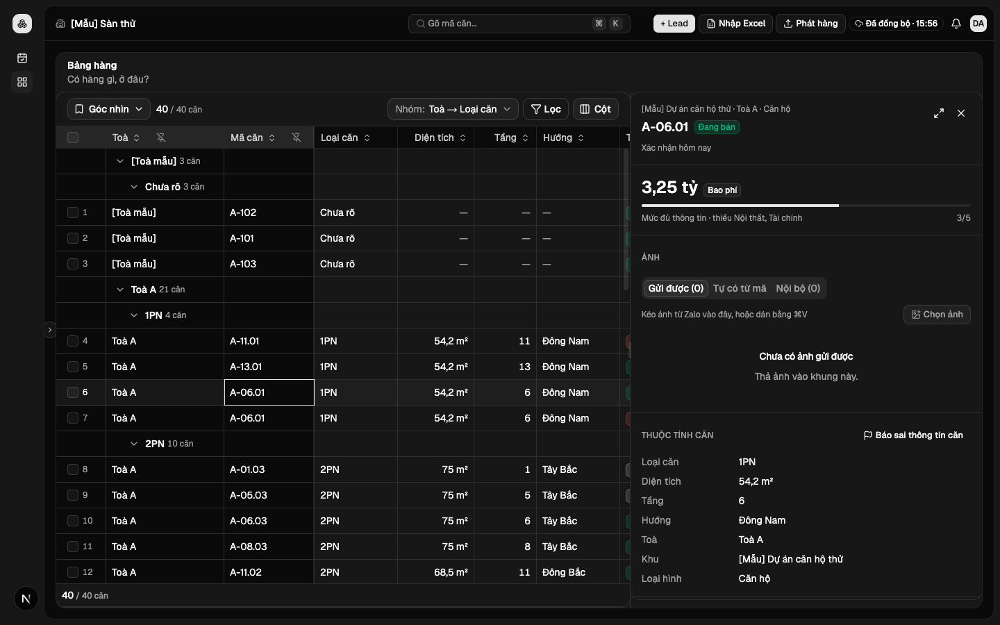
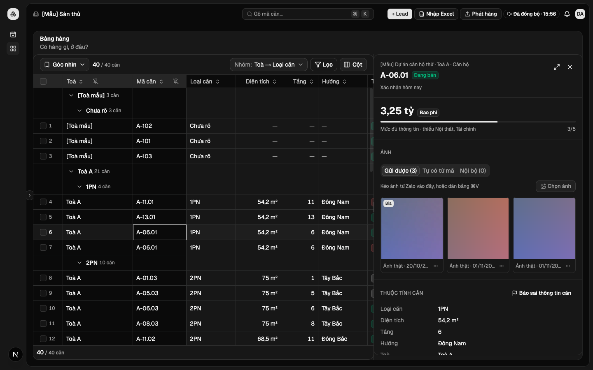

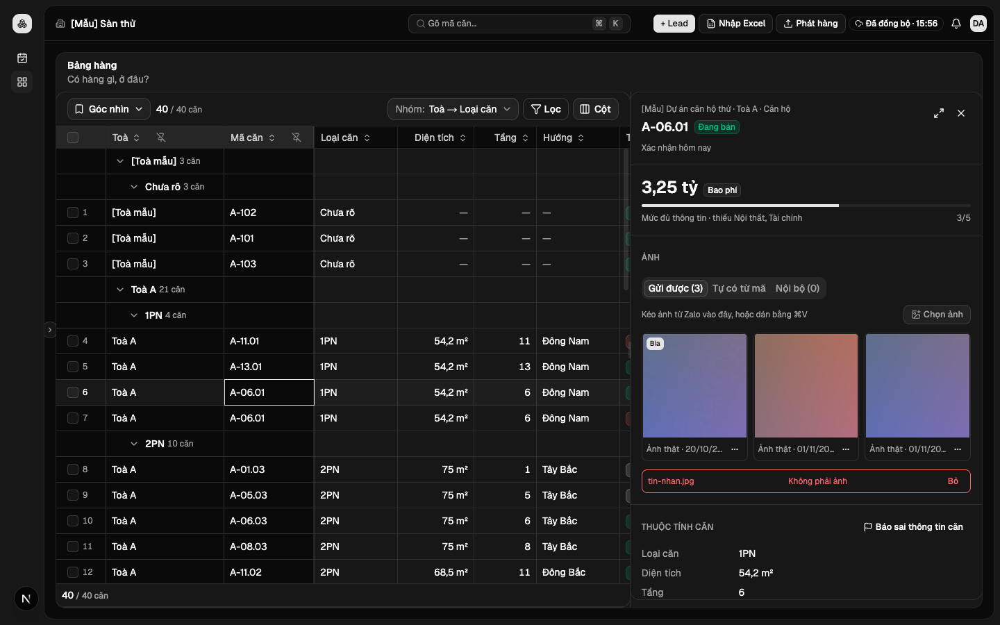
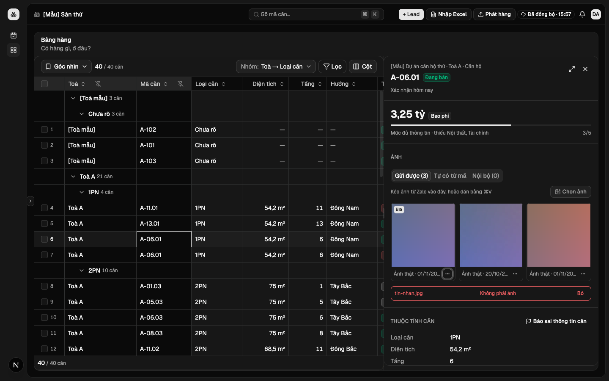
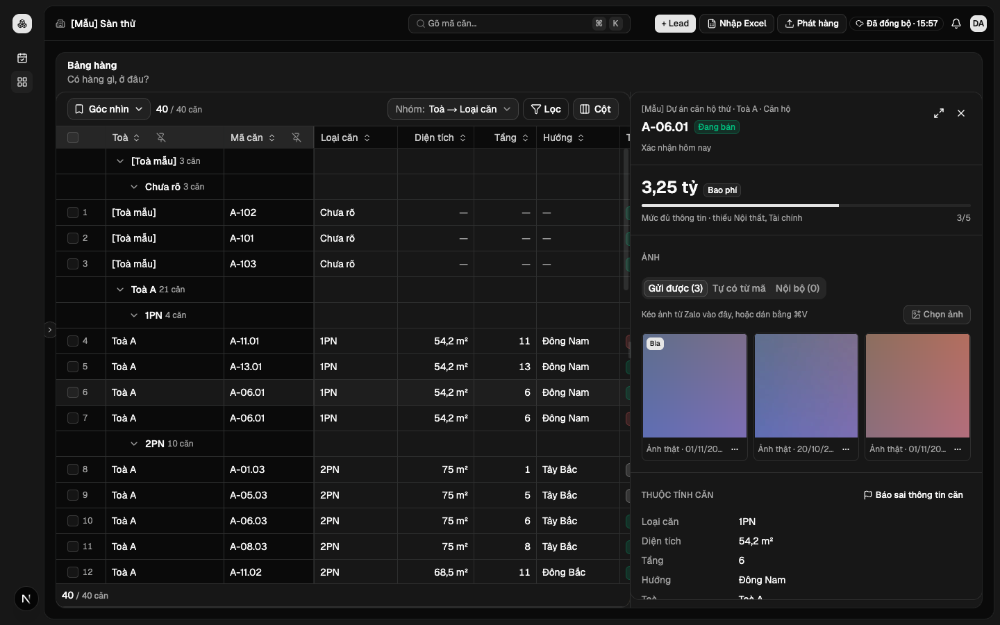
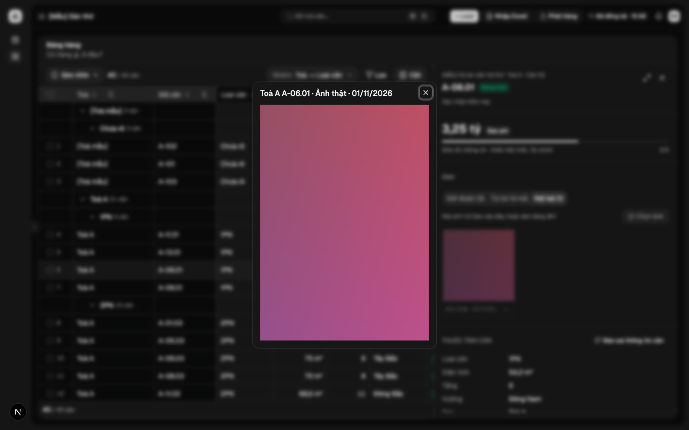
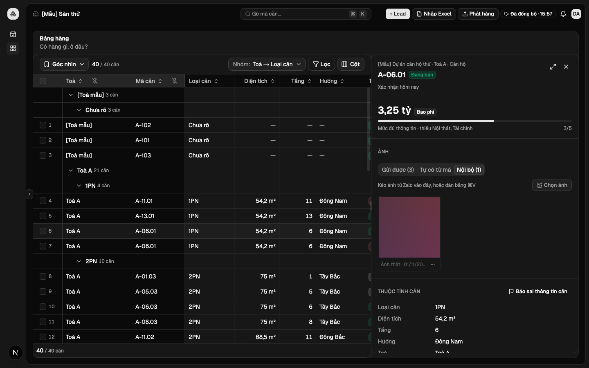
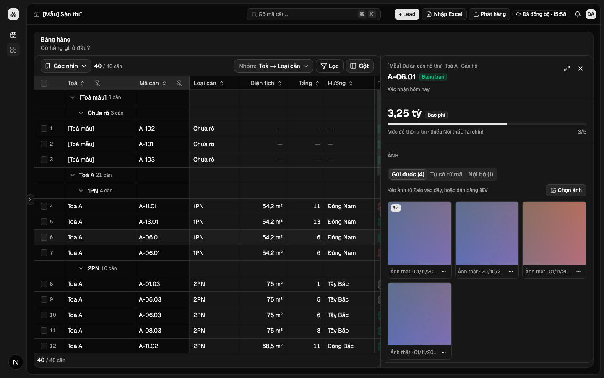
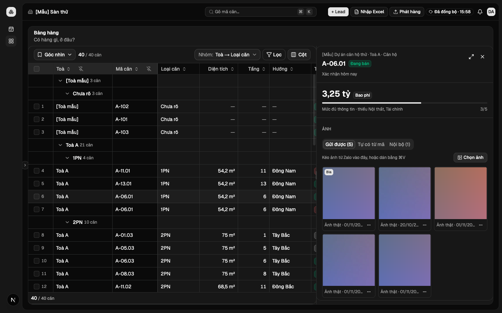
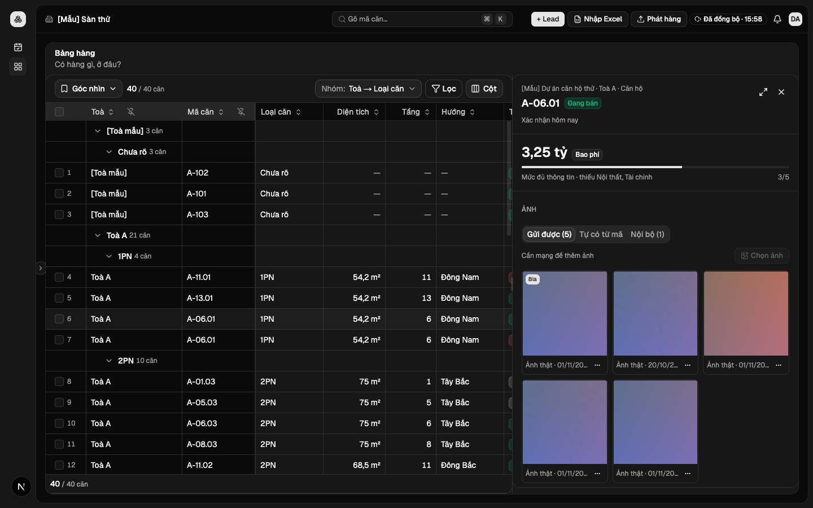
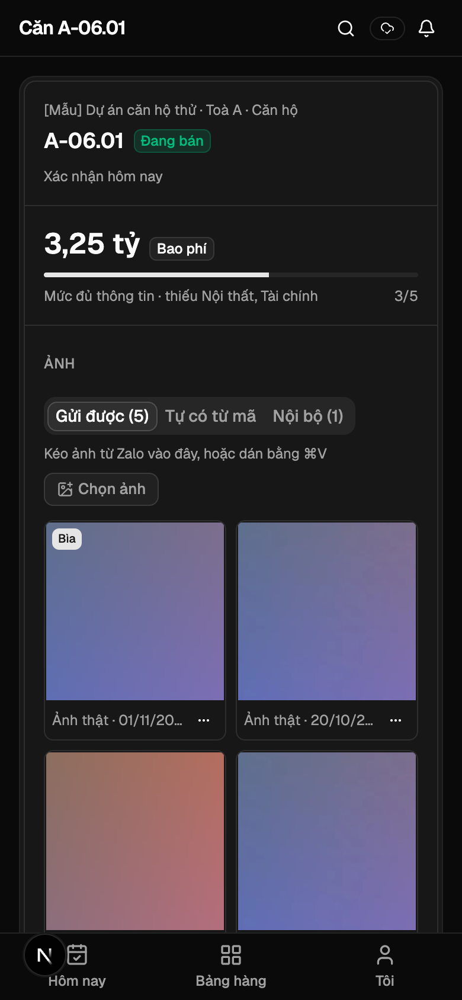
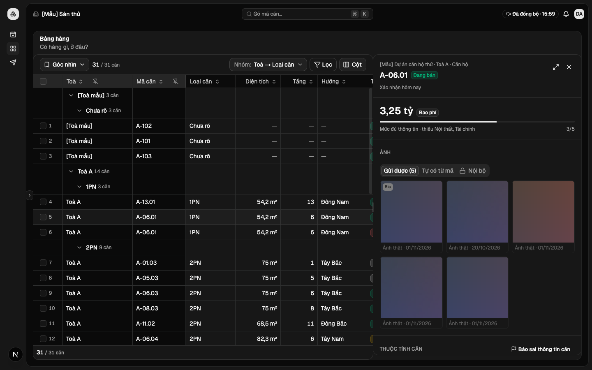
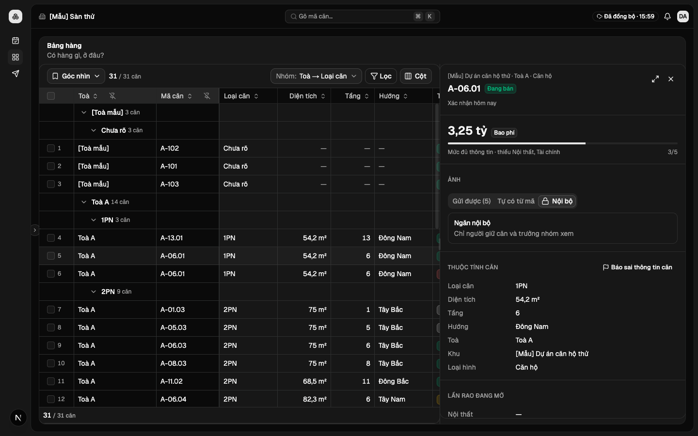
PASS E10b · test
AC-10: Given cột hồ sơ trên bản chạy thật với dữ liệu mẫu, When đầu chủ đi luồng chính (thả ba ảnh, đổi thứ tự, đặt
Eval không phân biệt (Analyst)
Vòng verify
- Round 1: E10 không đạt và có 10 phát hiện của bước đo (E2, E5, E6, E8 và E1 có ca đo hàm phụ thay vì đầu ra); trả về triển khai, sửa ở commit c315989 và cd1ccf2.
- Round 2: toàn bộ eval PASS (E1b, E3b, E4, E5b, E6c, E9 mang từ vòng 1); phát hiện ngoài hợp đồng chuyển người quyết ở Cổng 2.
Tài nguyên
| Khối | Tác tử | Token đầu ra |
|---|---|---|
| S4 round 1 | 23 | 89.724 |
| S4 round 2 | 17 | 60.902 |
2 lượt chấm · tổng 150.626 token
Giới hạn và ngoài hợp đồng
- Lần rao chọn ảnh hiện; ảnh tính vào mức đủ và «Sẵn sàng bán» — hàng 23, 32.
- Che một vùng trên ảnh, bản nhẹ để gửi ra — hàng 19.
- Gửi ảnh + tin, trang khách có ảnh — hàng 32, 33.
- Chụp ảnh trong app trên điện thoại, nhận ảnh chia sẻ từ Zalo điện thoại — hàng sau của nhóm điện thoại.
- Ảnh mặt bằng, view từ danh mục Invest — đổi khuôn `packages/connect` (hàng 10); vòng này chỉ dựng thẻ và hàm đọc.
- Xem ảnh khi mất mạng; Supabase Storage — theo ADR-0014 khi dung lượng vượt hoặc Hỏi-1 chọn lối khác.
Giao
chưa ghi quan sát production
Giá trị
- Câu hỏi phép đo trả lời: [đề xuất] đã đạt «Đầu chủ kéo hoặc dán ảnh từ Zalo trên máy tính vào hồ sơ căn và xếp vào ba ngăn; ngăn nội bộ không bao giờ ra ngoài, không lưu trên máy» chưa? — chưa đo
- Kết quả nào là SỐNG: [đề xuất] Đầu chủ kéo hoặc dán ảnh từ Zalo trên máy tính vào hồ sơ căn và xếp vào ba ngăn; ngăn nội bộ không bao giờ ra ngoài, không lưu trên máy — chưa đo
- Kết quả nào là CHẾT: [đề xuất] chưa đạt «Đầu chủ kéo hoặc dán ảnh từ Zalo trên máy tính vào hồ sơ căn và xếp vào ba ngăn; ngăn nội bộ không bao giờ ra ngoài, không lưu trên máy» khi hết timebox — chưa đo
- Timebox: … — chưa đo